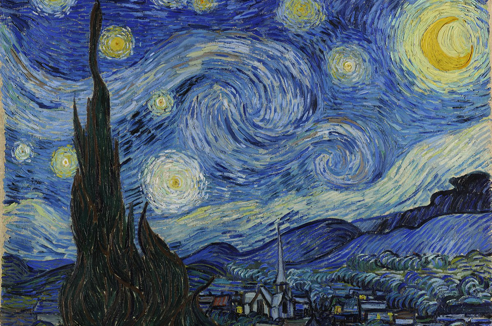

Kenzo Sutarwan - Minggu, 27 Agustus 2023
Most artists, especially lovers of painting, are certainly no strangers to Vincent Van Gogh's painting The Starry Night. The Starry Night is painted by Vincent Van Gogh, a painter from the Netherlands who was born on March 30, 1853 and the second of six children. The flow of painting brought by Vincent Van Gogh is post-impressionism. In fact, Van Gogh became one of the pioneers who influenced many streams that followed, such as Fauvism, Neo-Impressionism, and others. His painting The Starry Night is the most popular work to date. The painting depicts a view of a village at night with a sky decorated with starlight and the moon. The painting Starry Night presents Van Gogh's beauty as well as a deep sense of sadness and emotion.
Who would have thought, behind this epic painting there is a sad story from Vincent Van Gogh. Van Gogh painted The Starry Night for 12 months while he was living in the mental hospital Saint Paul de Mausole, France. It was a few months after suffering a breakdown in which he cut off part of his own ear with a razor. In the mental hospital, Van Gogh watched the night sky from his barred bedroom window and wrote a letter to Theo describing a beautiful view of the stars one summer morning in 1889. Van Gogh was not allowed to paint in his bedroom. Thus, Van Gogh painted the scene from memory and used his imagination to paint a small village that didn't really exist. Through this painting, Van Gogh said that the night is more colorful than the day and that the stars are more than white dots on black, instead of appearing yellow, pink or green.